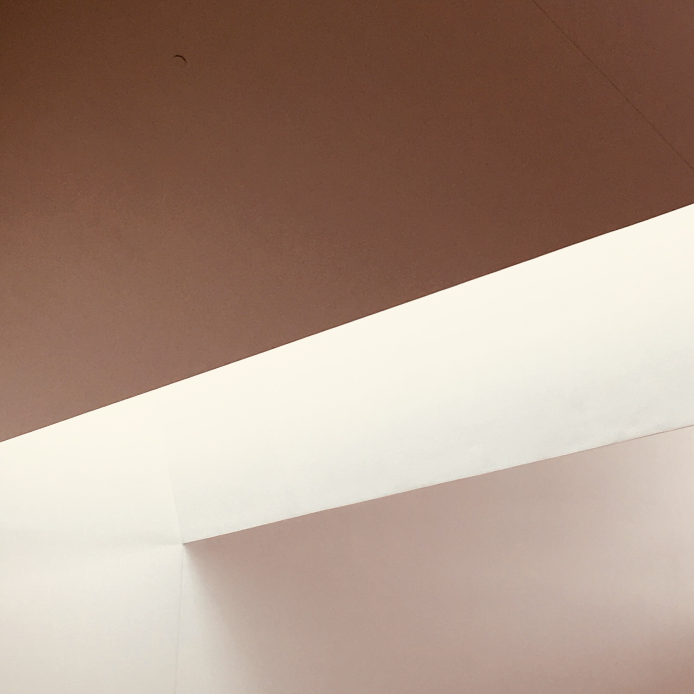
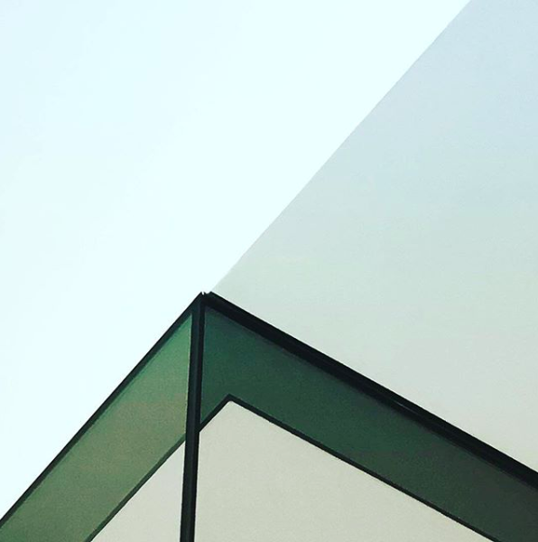
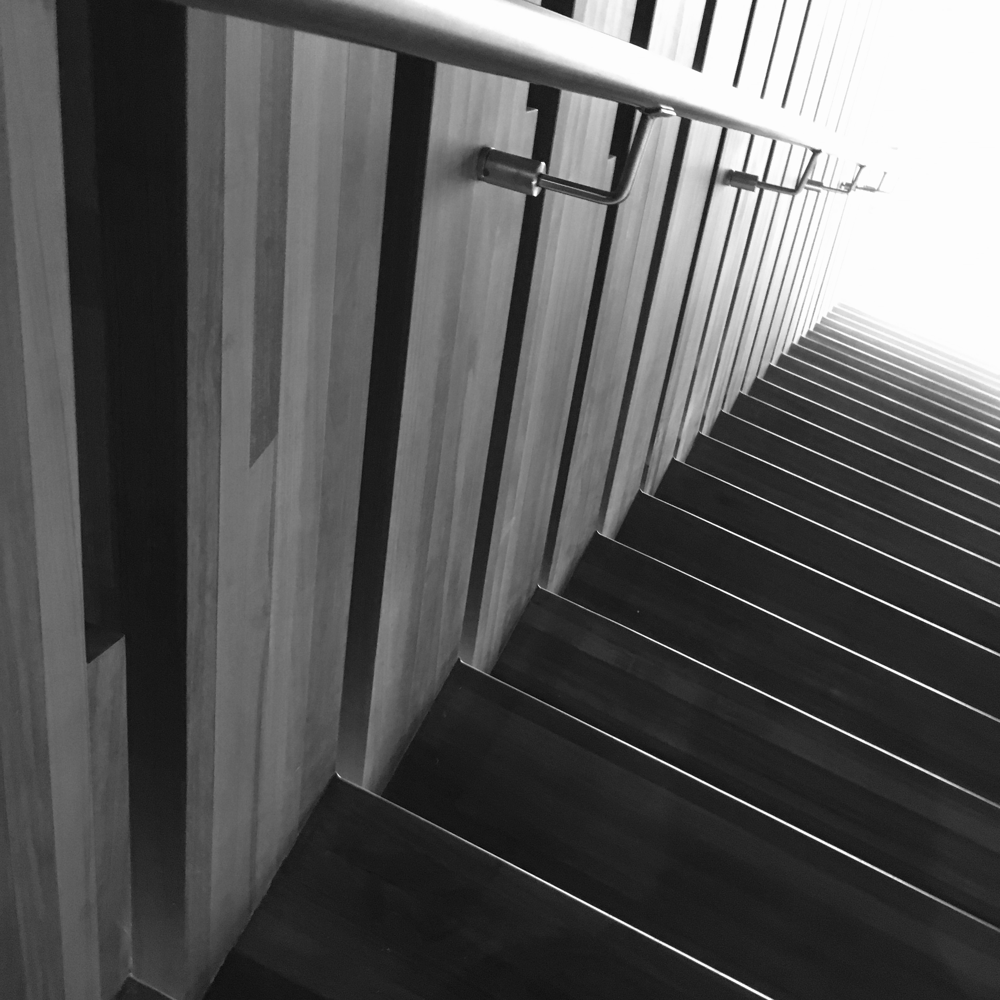
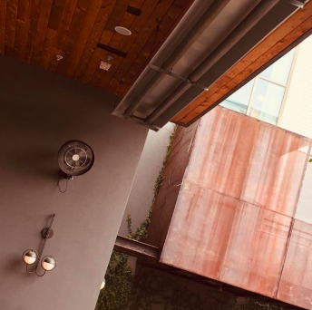
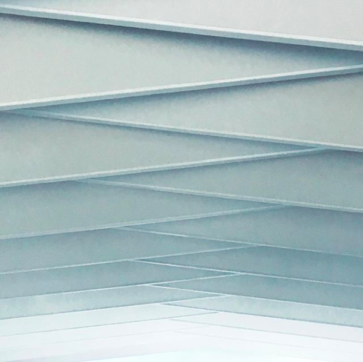
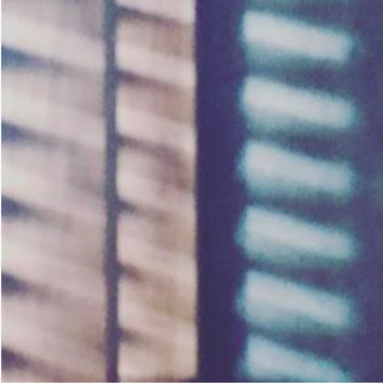
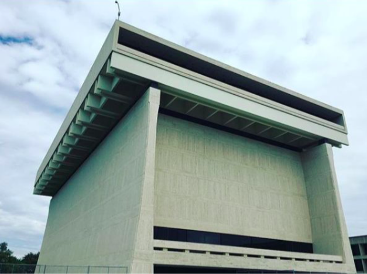
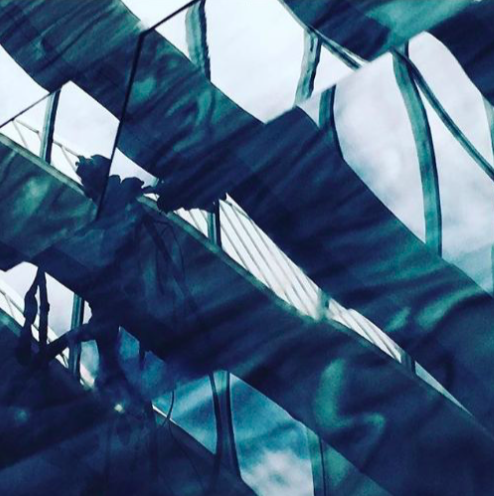
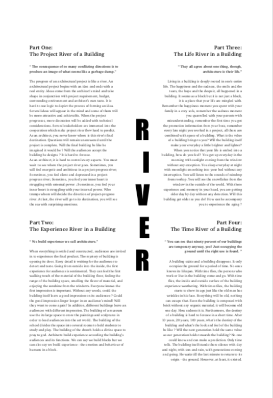

Architecture Criticism
Week 2
Lines and angles exist everywhere.Round forms are used to reduce the stiffness of lines and angles. Same pattern with double lines can be found in everywhere, in the library name outside the library, in the door window of library, in the wooden wall inside the library and even in the button of elevator. Much effort has been used to make lights inside, more windows on the top roof. For my viewpoint, there are two things essential to library - reading and quietness. Library is a place for reading quietly. However, first, not enough light in the reading place of top floor, more light have been designed to the inner space not reading space; Second, the hollow inside place is not a good way to make every floor quiet because if there is noisy on the third floor, it could be heard in the fourth and second floor. It is a place more like to give a landscape view for everyone in the library not for giving everyone a quiet reading place. I like abstract.This image I took is the most beautiful view I saw in the library. The light, the shadow, the line and the angle, which you cannot find in the nature and is created by the architect, form the beautiful image that attracted me.
Week 3
It is a building that inspire your curiosity to explore more. You feel eager to understand the meaning behind its design. Many questions swirled into my mind. “ Why did the architect design the walkway this way ? Why did he use different shape of window, lamp ? Is there any relationship between them? Why did he choose this size combination? Did these combination exist golden ratio? Where did he get inspiration from ? How did these inspirations form this building? Questions in mind make the courthouse like a pandora’s box. You felt ordinary when you first went into the lobby ,but would suddenly be attracted by its inner imaginable space . Hollow abstract window and geometric ceiling lamp, both give you the concept it stands for its function - courthouse.New York Times architecture critic once wrote that the building exhibited a tension "between the desire to uphold core democratic values and a growing sense of instability". After I went out of the courthouse, I felt the world is the architects’ playground. They use materials to create an object from the earth through their imagination. The world is full of buildings from classic to modern, each stands for the taste of the architect behind her.
Week 4
I was writing this article on the rooftop of Contemporary Austin with nobody else around. Cars, noises and anonymous sounds passed my ears. Sometimes, pigeons flew from somewhere else, eating and walking quietly. It was the hottest day in Austin over the last five months. The feeling of the summer season came suddenly. Sitting on the rooftop, surrounded by the wooden material, I felt the warmth and quietness that was connected to nature. It reminded me of some leisurely afternoon in the summer break - lazy, relaxed with ice-cream in my hand, some art exhibition with cool temperature inside. In addition, encircled by the wooden ground, the rooftop is connected to the country yard in the imagination. The shape of Contemporary Austin - white box, open floor with contemporary art exhibited there, made me think of some contemporary art museums I had visited, they all hold some common characteristics - objects settling around, convey the meaning we cannot understand at first sight, some voices from videography. Sometimes, I felt that the building function for art museum is just a box, they should emphasize its “void“ function in order to be filled by the art exhibition itself.
Week 5
Wooden roof, metal staircase, glass window, brick wall....the South Congress hotel is designed with various material with surfaces exposed outside. “Ugly? Definitively no.” They are combined together in harmony. Hotel, restaurant, garden, coffee shop, bar, stores.. It is like a small community sharing many functions with main function as a hotel. “Noisy? Definitively no”. They are combined together showing a kind of energetic life. Old, new, nature, industry, modern, classic... It is like an exhibition of style history. “Dazzling? Definitively no”. They are combined together settling south congress hotel between modern and classic style with a tendency to post-industrial style. All these elements get along well with each other, they are keeping silent to accompany audiences in space to enjoy leisure life. Same with the inside, the appearance of the south congress hotel shares the same slience value. Most of hotels are designed to attract people’s attention, especially on its appearance, to entice people, however, south congress hotel is sitting quietly with the building around him(her), waiting for people to go into his(her) zone inadvertently. As a “designed” building, it did not speak his (her) voice loudly -“ I was designed” comparing to most of the buildings, they speak aloud to the audiences - ” we were designed”.
Week 6

In the countryside lived an old man. He had his wrinkled skin, but cannot neglect he once was a well-structured young boy experiencing his vigor life. After he retired, he built a building with unattracted surface outside and attracted surface inside. The inside surface witnessed his young days with music and friends, vitality and brightness. The outside surface showed his old days silently with wrinkled skin. He sometimes hidden himself into his memory block to enjoy previous sunshine, friends and fresh life. Yesterday once more. The building’s structure is excellent and novel. The geometry of cubes have been used to combine the structure of building .The outer surface of building uses rugged red bricks showing a lifelong rhythm silently enduring the weathering of wind, snow and rain. The inside surface of building uses white, orange and red color of the windows hiddenly showing a vigor young rhythm - sunshine, peaceful chatting place and safeness. Old and young, visible and invisible, show and hide, composed this building for young people living and eating there. They are young now but there is a sadness news that they will become old. Life has passed. All of the vigor days will varnish. Only memory exists which can not replace the wrinkled skin in the old-aged body. Yet it reminds me - let there be light(yehi 'or).
Week 7
Located in the corner of university campus, engineering building emerges among all of the old and traditional campus building with modern structure and appearance - young and energetic. Surrounded with grass and river, the building is like a ship which is starting to sail. All is settled. It is definitively a energetic building when you walk inside. Except for a little noise, all space is set with desks and chairs providing studying environment for students here - the desks and chairs in walkways, the study room in the corner, the library room, the sitting place in the staircases, you can find a place to settle down and immerse into study anywhere, anytime. Fantastic! The transparent windows of all the rooms provide a wonderful viewpoint for students and teachers inside and outside. For some classrooms which need some kind of privacy, they use a interesting barcode as a decoration in the window surface to reduce the transparency of the classrooms. I like the study atmosphere there which I think the architecture itself is a big help to build such kind of study atmosphere with enough study places and expose all the study places with transparency. When I view around these students here, it made me think of ship again - “All is prepared, the life ship of students is starting to sail. ”
Week 8
Located in the campus, congregation Agudas achim plays its function from its design. The square center in the middle with four angles’ seats, the surrounded seats with hexagon form, the fire with a plate settling upside in one wall, the nine voice plates hanging on the roof, all these special forms follows its special function - as a sanctuary. The structure, the geometric shape all tells the deep,delicate and elegant thinking of architect to design this building for its function. However, when I sat alone on the seat in the second floor, I sat there quietly to feel the building, all I can feel is just the its structure, its function, no emotion is inspired. I started to wonder why and also what kind of feeling should this building give me ? - the holy ? the solemn? the quietness? the humane ? Nothing has left in my emotion. It is what the building give to me. For the quietness, it should be quiet because it is separate from the outside completely. For the holy, it should be given for that its function is to express its holy. For the solemn, it depends on the height and other stuffs of building and it could be not as an emotion that this building should give to me. For the humane, it depends on the detail of design in environment to provide a comfortable feeling of the building.
Week 10
Located in the far west of the university, LBJ Presidential library is settled there quietly surrounding with trees, grass and walking paths. It is more like a monument than a library. How can a building be stated as a monument? According to wiki description, it should be considered to commemorate a person or an event. Yes, we can all understand that. However, what characteristics that are used to build a monument or a monumental building ? First, it shows a symbol. Second, it should have age and size. Third, it convey information. LBJ Presidential library satisfied all of the three characteristics. The geometry block and simple outline contribute to its visual identity as a symbol. The library was dedicated in 1971 and its volume is big enough to make people standing near feel small and awe. In additional, it convey its information in memory of the president Lyndon Baines Johnson in its inside with museum and president motto column. Yes, it is a monument. But, what differentiate the monument and an ordinary huge building. Sometime, when some building has large empty space inside, we would say that it waste space and is hollow. However, for a monument, void space is necessary to show its superiority and intrigue the awe from audiences. It exposes that form shows it functions in different scenarios.
Week 11
Contextual Beauty
What forms the beauty and how can beauty be best appreciated ? Walking inside the corridor of Blanton Museum, I was impressed by the beauty of the oil painting, modern art, photography and etc. They are all marvelous art pieces which are hanging on the huge, elegant walls surrounding with other counterparts. Marvelous, gorgeous ,beautiful are the voice or inner sound from the audiences passing by. The building of Blanton Museum takes its function as a big box to exhibit these masterpieces with several rooms, corridors. However, what makes these masterpiece beauty except for itself, if they are exhibited in the ordinary room, in the playground or even in the street... is it still beauty as it were? It is hard to say. The building of Blanton Museum upgrade its light emotion with blue wall and glass rooftop. Sunlight shines from glass rooftop into the wall to form the reflection. All places inside are peaceful, elegant and quiet to provide a well-suited atmosphere for audiences to enjoy arts. Within such spatial space, everyone walks slowly to appreciate the beauty of art with light emotions - happy, soft and sensitive.
An Image: A Thousand Words
We often learn things in unexpected ways. Something spins us around in our tracks, and we suddenly see an avenue that was hidden before. Our axis is tilted, and we right ourselves in a new way. When conditions arise for the possibility of a new path, some observations have a heightened ability to seize that moment and point the way.
Part One: The Project River of a Building
“ The consequence of so many conflicting directions is to produce an image of what seems like a garbage dump.”
The progress of an architectural project is like a river. An architectural project begins with an idea and ends with a real entity. Ideas come from the architect’s mind and take shape in conjunction with project requirement, budget, surrounding environment and architect’s own taste. It is hard to use logic to depict the process of forming an idea. Several ideas will appear in the mind and some of them will be more attractive and achievable. When the project progresses, more discussion will be added with technical considerations. Several stakeholders are immersed into the cooperation which make project river flow hard to predict. As an architect, you never know where is this river’s final destination. Questions will remain unanswered until the project is complete. Will the final building be like he imagined it would be ? Will the audiences accept the building he designs ? It is hard to foresee. As an architect, it is hard to control every aspects. You must wait to see where the project river goes. Sometimes, you will feel energetic and ambitious in a project-progress river; Sometimes, you feel silent and depressed in a project-progress river; Sometime, you feel your inner heart is struggling with external power ; Sometimes, you feel your inner heart is struggling with your internal power. Who trumps whom will decide the direction of project-progress river. At last, the river will go to its destination, you will see the sea with surprising emotions.
Part Two: The Experience River in a Building
“We build experience we call architecture.”
When everything is settled and constructed, audiences are invited in to experience the final product. The mystery of building is opening its door. Every detail is waiting for the audiences to detect and taste. Going from outside into the inside, the first experience for audiences is sentimental. They can feel the first walking touch of the material of the building floor, feeling the range of the building space, smelling the flavor of material, and enjoying the sunshine from the windows. Everyone knows the first impression is important. Without any words, could the building itself leave a good impression on its audiences ? Could the good impression linger longer in an audience’s mind? Will they want to come again? In addition, different buildings leave an audiences with different impression. The building of a museum use the its large space to store the paintings and sculptures in order to lead audiences into the art world. The building of the school divides the space into several rooms to hold students to study and play. The building of the church holds a divine space to pray to god. Architects build experience according the building’s audiences and its functions. We can say we build blocks but we can also say we build experience - the emotion and behaviour of humans in a block.
Part Three: The Life River in a Building
“ They all agree about one thing, though, architecture is their life.”
Living in a building is deeply rooted in one’s entire life. The happiness and the sadness, the smile and the tears, the hope and the despair, all happened in a building. It seems as a block but it is not just a block, it is a place that your life are mingled with. Remember the happiness moment you spent with your family in a cozy sofa, remember the sadness moment you quarrelled with your parents with misunderstanding, remember the first time you got the promotion information from your boss, remember every late night you worked in a project, all these are combined with space of a building. What is the value of a building brings to you? Will the building itself make your everyday a little brighter and lighter? When you notice that your life is embed into a building, how do you feel? You get up everyday in the morning with sunlight coming from the window without any exception. You sleep everyday at night with moonlight smoothing into your bed without any interruption. You will listen to the sounds of raindrop from rooftop. You will see the snowflakes from the window in the outside of the world. With these experience and memory in your head, you are getting older day by day without any detection. Will this building get older as you do? How can he accompany you to experience the aging ?
Part Four: The Time River of a Building
“ You can see that ninety percent of our buildings are temporary anyway, yes? Just occupying the ground until the right use is found. ”
A building exists and a building disappear. It only occupies the ground for a period of time. No ones knows its lifespan. With time flies, the persons who work or live in the building come and go. With time flies, the inside and outside surface of the building experience weathering. With times files, the building starts to show its age just like the old man has wrinkles in his face. Everything will be old, nothing can escape that. Even the building is composed with brick without any organic material, it will become old one day. How sadness it is. Furthermore, the destiny of a building is hard to foresee in a short time. After 10 years, 20 years, 100 years, what’s the destiny of the building and what’s the look and feel of the building be like ? Will the next generation hold the same value as our generation holds towards the building? No one could know and can make a prediction. Only time tells. The building itself stands there silence with day and night, with sun and rain, with generations coming and going. He waits till the last minute to return to its origin - the ground. However, at least, it existed.